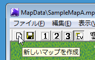
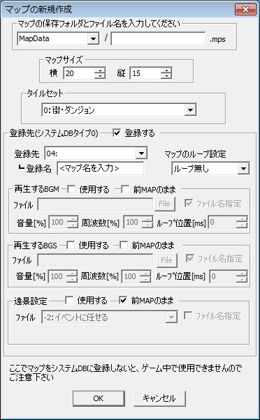
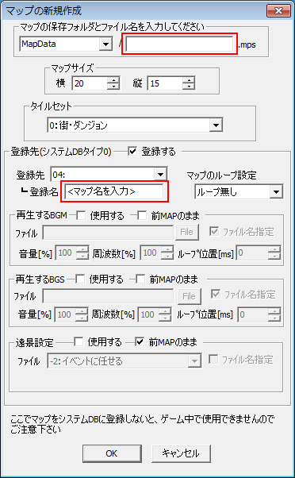
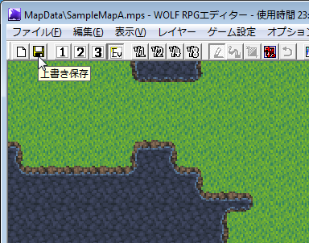

【1.マップの新規作成から登録まで】
ここではマップの新規作成からシステムデータベースへの登録までを説明します。WOLF
RPGエディターでは、マップを作成してもシステムデータベースに登録しないとゲームで使うことができません。
まず、マップの新規作成を行います。

この左端のアイコンをクリックすると、「マップの新規作成」ウィンドウが表示されます。
|  | 【マップの保存フォルダとファイル名】 保存したいフォルダを左のプルダウンメニューから選び、 保存したいファイル名を右の文字入力欄に入力します。 【マップサイズ】 マップの大きさを指定します。単位はチップ数です。 【タイルセット】 マップの描画に使用するタイルセットを選択します。 【登録先】 マップファイル（mpsファイル）は通常、システムDBタイプ0番のデータベースにファイル名を書き込まないとゲームで使うことができません。しかし、ここで登録先を指定することで、簡単にシステムDBタイプ0番にそれらを書き込むことができます。 デフォルトで「登録する」のチェックが押されているので、あとは「登録先」を選択し、登録名、ループ設定、BGM、BGS、遠景設定を指定してください。 なお、ここの「登録名」はゲーム的には意味はありません、あなたがエディットする際に区別するための名前ですので、自由に設定してください。 |
↓入力例
|  | 最低限、赤枠の部分だけ入力して「ＯＫ」を押せば、 マップの新規作成およびシステムデータベースへの 登録は完了します。ここできっちり設定しなくとも、 後でマップの設定を変更したいときは、メインウィンドウの |
さて、マップの新規作成からシステムデータベースへの登録はここまでで終わりですが、新規作成されたマップは何も描かれていないので、少しマップを作ってみましょう。
レイヤー選択ボタンを押して表示される「マップチップ」ウィンドウからチップを選び、以下のようなマップを書いてみます。

マップを描いたら、「上書き保存」のアイコンをクリックして保存しましょう。保存すると、タイトルバーの「*」の文字が消えます。
この「*」マークは、記録されてる状態からマップを変更したかどうかを表すマークで、何か描いたり、イベントを作成したりすると表示されます。
以上の手順で、マップの新規作成からシステムデータベースへの登録、簡単なマップの作成までが完了しました。
では、次はゲームの開始位置の設定方法について説明します。
【2.スタート位置の設定】